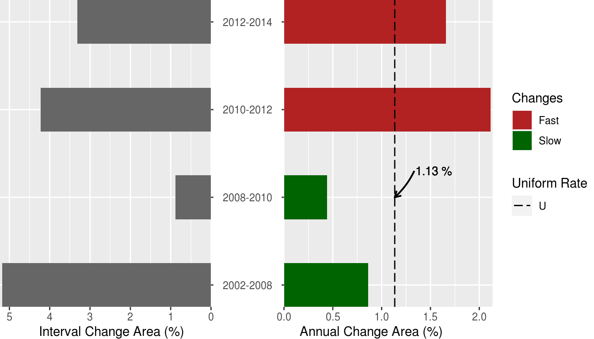
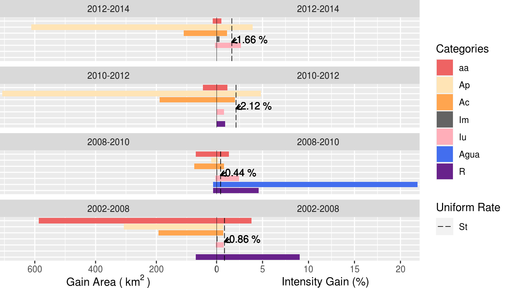
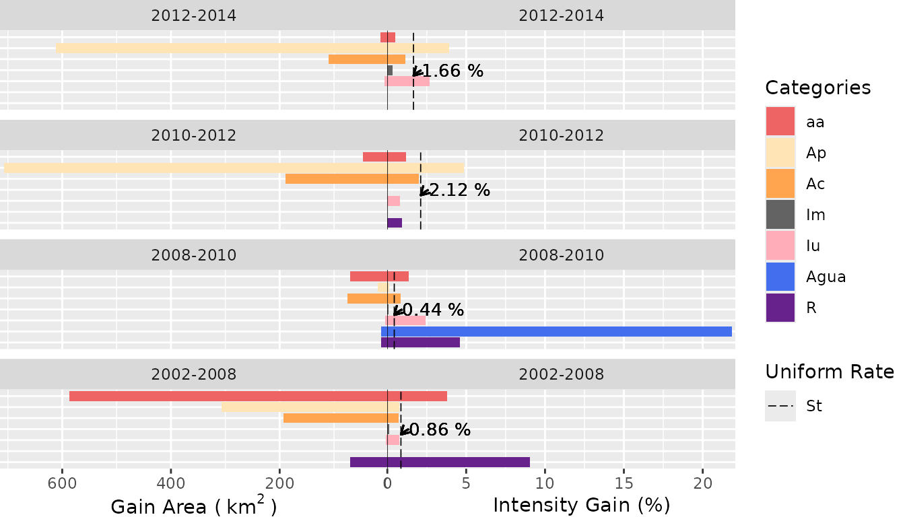
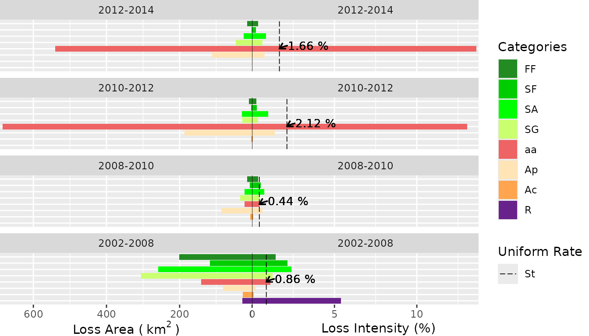
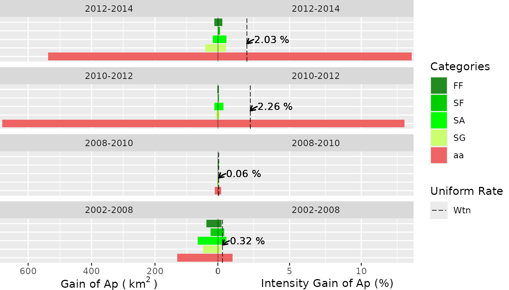
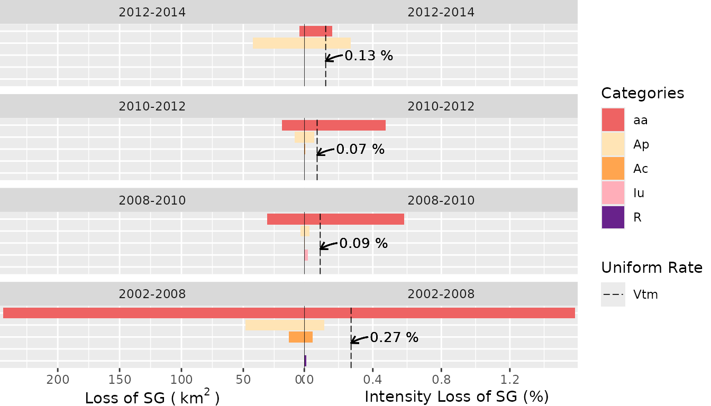
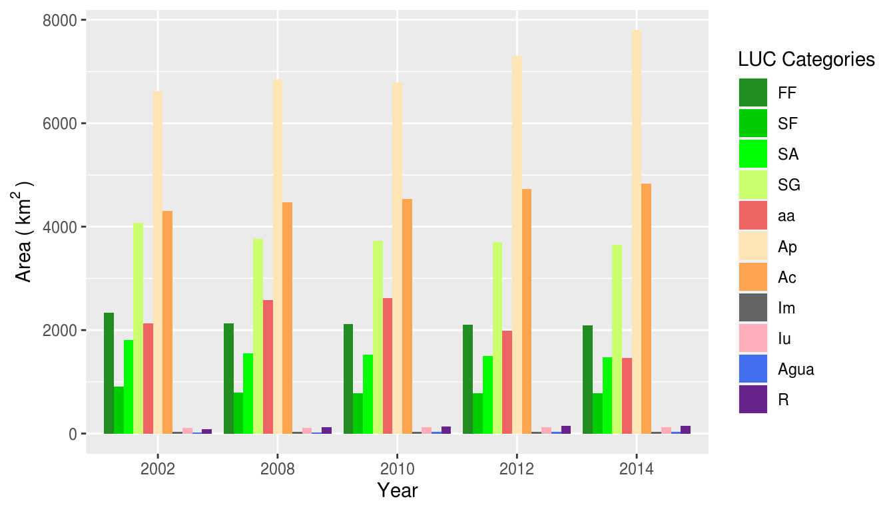

Quick introduction to the OpenLand package
Source:vignettes/openland_vignette.Rmd
openland_vignette.RmdThis is a Vignette on how to use the OpenLand package for exploratory analysis of Land Use and Cover (LUC) time series.
Description of the tool
OpenLand is an open-source R package for the analysis of land use and cover (LUC) time series. It includes support for consistency check and loading spatiotemporal raster data and synthesized spatial plotting. Several LUC change (LUCC) metrics in regular or irregular time intervals can be extracted and visualized through one- and multistep sankey and chord diagrams. A complete intensity analysis according to (Aldwaik and Pontius 2012) is implemented, including tools for the generation of standardized multilevel output graphics.
São Lourenço river Basin example dataset
The OpenLand functionality is illustrated for a LUC dataset of São Lourenço river basin, a major Pantanal wetland contribution area as provided by the 4th edition of the Monitoring of Changes in Land cover and Land Use in the Upper Paraguay River Basin - Brazilian portion - Review Period: 2012 to 2014 (Embrapa Pantanal, Instituto SOS Pantanal, and WWF-Brasil 2015). The time series is composed by five LUC maps (2002, 2008, 2010, 2012 and 2014). The study area of approximately 22,400 km2 is located in the Cerrado Savannah biom in the southeast of the Brazilian state of Mato Grosso, which has experienced a LUCC of about 12% of its extension during the 12-years period, including deforestation and intensification of existing agricultural uses. For processing in the OpenLand package, the original multi-year shape file was transformed into rasters and then saved as a 5-layer RasterStack (SaoLourencoBasin), available from a public repository (10.5281/zenodo.3685229) as an .RDA file which can be loaded into R.
Input data constraints
The function contingencyTable() for data extraction demands as input a list of raster layers (RasterBrick, RasterStack or a path to a folder containing the rasters). The name of the rasters must be in the format (“some_text” + “underscore” + “the_year”) like “landscape_2020”. In our example we included the SaoLourencoBasin RasterStack:
# first we load the OpenLand package library(OpenLand) # downloading the SaoLourencoBasin multi-layer raster and make it available into R url <- "https://zenodo.org/record/3685230/files/SaoLourencoBasin.rda?download=1" temp <- tempfile() download.file(url, temp, mode = "wb") # downloading the SaoLourencoBasin dataset load(temp) SaoLourencoBasin #> class : RasterStack #> dimensions : 6372, 6546, 41711112, 5 (nrow, ncol, ncell, nlayers) #> resolution : 30, 30 (x, y) #> extent : 654007.5, 850387.5, 8099064, 8290224 (xmin, xmax, ymin, ymax) #> crs : +proj=utm +zone=21 +south +ellps=GRS80 +units=m +no_defs #> names : landscape_2002, landscape_2008, landscape_2010, landscape_2012, landscape_2014 #> min values : 2, 2, 2, 2, 2 #> max values : 13, 13, 13, 13, 13
Extracting the data from raster time series
After data extraction contingencyTable() saves multiple grid information in tables for the next processing steps. The function returns 5 objects: lulc_Multistep, lulc_Onestep, tb_legend, totalArea, totalInterval.
The first two objects are contingency tables. The first one (lulc_Multistep) takes into account grid cells of the entire time series, whereas the second (lulc_Onestep) calculates LUC transitions only between the first and last year of the series. The third object (tb_legend) is a table containing the category name associated with a pixel value and a respective color used for plotting. Category values and colors are created randomly by contingencyTable(). Their values must be edited to produce meaningful plot legends and color schemes. The fourth object (totalArea) is a table containing the extension of the study area in km2 and in pixel units. The fifth table (totalInterval) stores the range between the first (Yt=1) and the last year(YT) of the series.
Fields, format, description and labeling of a lulc_Multistep table created by the contingencyTable are given in the following:
| [Yt, Yt+1] | Categoryi | Categoryj | Ctij(km2) | Ctij(pixel) | Yt+1 - Yt | Yt | Yt+1 |
|---|---|---|---|---|---|---|---|
chr |
int |
int |
dbl |
int |
int |
int |
int |
| Period of analysis from time point t to time point t+1 | A category at interval’s initial time point | A category at interval’s final time point | Number of elements in km2 that transits from category i to category j | Number of elements in pixel that transits from category i to category j | Interval in years between time point t and time point t+1 | Initial Year of the interval | Final Year of the interval |
| Period | From | To | km2 | QtPixel | Interval | yearFrom | yearTo |
In the lulc_Onestep table, the Yt+1 terms are replaced by YT, where T is the number of time steps, i.e., YT is the last year of the series.
For our study area, contingenceTable(input_raster = SaoLourencoBasin, pixelresolution = 30) returns the following outputs:
# SL_2002_2014 <- contingenceTable(input_raster = SaoLourencoBasin, pixelresolution = 30) SL_2002_2014 #> $lulc_Multistep #> # A tibble: 130 x 8 #> Period From To km2 QtPixel Interval yearFrom yearTo #> <chr> <int> <int> <dbl> <int> <int> <int> <int> #> 1 2002-2008 2 2 6543. 7269961 6 2002 2008 #> 2 2002-2008 2 10 1.56 1736 6 2002 2008 #> 3 2002-2008 2 11 55.2 61320 6 2002 2008 #> 4 2002-2008 2 12 23.9 26609 6 2002 2008 #> 5 2002-2008 3 2 37.5 41649 6 2002 2008 #> 6 2002-2008 3 3 2133. 2370190 6 2002 2008 #> 7 2002-2008 3 7 155. 172718 6 2002 2008 #> 8 2002-2008 3 11 7.48 8307 6 2002 2008 #> 9 2002-2008 3 12 0.356 395 6 2002 2008 #> 10 2002-2008 3 13 0.081 90 6 2002 2008 #> # … with 120 more rows #> #> $lulc_Onestep #> # A tibble: 45 x 8 #> Period From To km2 QtPixel Interval yearFrom yearTo #> <chr> <int> <int> <dbl> <int> <int> <int> <int> #> 1 2002-2014 2 2 6169. 6854816 12 2002 2014 #> 2 2002-2014 2 9 2.39 2651 12 2002 2014 #> 3 2002-2014 2 10 10.4 11513 12 2002 2014 #> 4 2002-2014 2 11 412. 457631 12 2002 2014 #> 5 2002-2014 2 12 29.7 33015 12 2002 2014 #> 6 2002-2014 3 2 110. 121762 12 2002 2014 #> 7 2002-2014 3 3 2091. 2323665 12 2002 2014 #> 8 2002-2014 3 7 116. 129304 12 2002 2014 #> 9 2002-2014 3 9 7.00 7774 12 2002 2014 #> 10 2002-2014 3 11 9.32 10359 12 2002 2014 #> # … with 35 more rows #> #> $tb_legend #> # A tibble: 11 x 3 #> categoryValue categoryName color #> <int> <fct> <chr> #> 1 2 DUL #ABBBE8 #> 2 3 XSE #A13F3F #> 3 4 LKC #EAACAC #> 4 5 MTO #002F70 #> 5 7 VRE #8EA4DE #> 6 8 FNR #F3C5C5 #> 7 9 ZCN #5F1415 #> 8 10 EIF #DCE2F6 #> 9 11 FHX #F9DCDC #> 10 12 SZE #EFF1F8 #> 11 13 HGF #F9EFEF #> #> $totalArea #> # A tibble: 1 x 2 #> area_km2 QtPixel #> <dbl> <int> #> 1 22418. 24908860 #> #> $totalInterval #> [1] 12
Editing the values in the categoryName and color columns
As mentioned before, the tb_legend object must be edited with the real category name and colors associated with the category values. In our case, the category names and colors follow the conventions given by Instituto SOS Pantanal and WWF-Brasil (2015) (access document here, page 17). The Portuguese legend acronyms were maintained as defined in the original dataset.
| Pixel Value | Legend | Class | Use | Category | color |
|---|---|---|---|---|---|
| 2 | Ap | Anthropic | Anthropic Use | Pasture | #FFE4B5 |
| 3 | FF | Natural | NA | Forest | #228B22 |
| 4 | SA | Natural | NA | Park Savannah | #00FF00 |
| 5 | SG | Natural | NA | Gramineous Savannah | #CAFF70 |
| 7 | aa | Anthropic | NA | Anthropized Vegetation | #EE6363 |
| 8 | SF | Natural | NA | Wooded Savannah | #00CD00 |
| 9 | Agua | Natural | NA | Water body | #436EEE |
| 10 | Iu | Anthropic | Anthropic Use | Urban | #FFAEB9 |
| 11 | Ac | Anthropic | Anthropic Use | Crop farming | #FFA54F |
| 12 | R | Anthropic | Anthropic Use | Reforestation | #68228B |
| 13 | Im | Anthropic | Anthropic Use | Mining | #636363 |
## editing the category name SL_2002_2014$tb_legend$categoryName <- factor(c("Ap", "FF", "SA", "SG", "aa", "SF", "Agua", "Iu", "Ac", "R", "Im"), levels = c("FF", "SF", "SA", "SG", "aa", "Ap", "Ac", "Im", "Iu", "Agua", "R")) ## add the color by the same order of the legend, ## it can be the color name (eg. "black") or the HEX value (eg. #000000) SL_2002_2014$tb_legend$color <- c("#FFE4B5", "#228B22", "#00FF00", "#CAFF70", "#EE6363", "#00CD00", "#436EEE", "#FFAEB9", "#FFA54F", "#68228B", "#636363") ## now we have SL_2002_2014$tb_legend #> # A tibble: 11 x 3 #> categoryValue categoryName color #> <int> <fct> <chr> #> 1 2 Ap #FFE4B5 #> 2 3 FF #228B22 #> 3 4 SA #00FF00 #> 4 5 SG #CAFF70 #> 5 7 aa #EE6363 #> 6 8 SF #00CD00 #> 7 9 Agua #436EEE #> 8 10 Iu #FFAEB9 #> 9 11 Ac #FFA54F #> 10 12 R #68228B #> 11 13 Im #636363
At this point, one can choose to run the Intensity Analysis or create a series of non-spatial representations of LUCC, such like sankey diagrams with the sankeyLand() function, chord diagrams using the chordDiagramLand() function or bar plots showing LUC evolution trough the years using the barplotLand() function, since they do not depend on the output of Intensity Analysis.
Intensity Analysis
Intensity Analysis (IA) is a quantitative method to analyze LUC maps at several time steps, using cross-tabulation matrices, where each matrix summarizes the LUC change at each time interval. IA evaluates in three levels the deviation between observed change intensity and hypothesized uniform change intensity. Hereby, each level details information given by the previous analysis level. First, the interval level indicates how size and rate of change varies across time intervals. Second, the category level examines for each time interval how the size and intensity of gross losses and gross gains in each category vary across categories for each time interval. Third, the transition level determines for each category how the size and intensity of a category’s transitions vary across the other categories that are available for that transition. At each level, the method tests for stationarity of patterns across time intervals (Aldwaik and Pontius 2012).
Within the OpenLand package, the intensityAnalysis() function computes the three levels of analysis. It requires the object returned by the contingenceTable() function and that the user predefines two LUC categories n and m. Generally, n is a target category which experienced relevant gains and m a category with important losses.
testSL <- intensityAnalysis(dataset = SL_2002_2014, category_n = "Ap", category_m = "SG") # it returns a list with 6 objects names(testSL) #> [1] "lulc_table" "interval_lvl" "category_lvlGain" #> [4] "category_lvlLoss" "transition_lvlGain_n" "transition_lvlLoss_m"
The intensityAnalysis() function returns 6 objects: lulc_table, interval_lvl, category_lvlGain, category_lvlLoss, transition_lvlGain_n, transition_lvlLoss_m. Here, we adopted an object-oriented approach that allows to set specific methods for plotting the intensity objects. Specifically, we used the S4 class, which requires the formal definition of classes and methods (Chambers 2008). The first object is a contingency table similar to the lulc_Multistep object with the unique difference that the columns From and To are replaced by their appropriate denominations according to the LUC legend.
The second object interval_lvl is an Interval object, the third category_lvlGain and the fourth category_lvlLoss are Category objects, whereas the fifth transition_lvlGain_n and the sixth transition_lvlLoss_m are Transition objects.
An Interval object contains one slot containing a table of interval level result (St and U values). A Category object contains three slots: the first contains the colors associated with the legend items as name attributes, the second slot contains a table of the category level result (gain (Gtj) or loss (Lti) values) and the third slot contains a table storing the results of a stationarity test. A Transition object contains three slots: the first contains the color associated with the respective legend item defined as name attribute, the second slot contains a table of the transition level result (gain n (Rtin and Wtn) or loss m (Qtmj and Vtm) values). The third slot contains a table storing the results of a stationarity test. Hereby, Aldwaik and Pontius (2012) consider a stationary case only when the intensities for all time intervals reside on one side of the uniform intensity, i.e. that they are always smaller or larger than the uniform rate over the whole period.
# showing the objects from the intensity analysis for our illustrative case testSL #> $lulc_table #> # A tibble: 130 x 6 #> Period From To km2 QtPixel Interval #> <fct> <fct> <fct> <dbl> <int> <int> #> 1 2002-2008 Ap Ap 6543. 7269961 6 #> 2 2002-2008 Ap Iu 1.56 1736 6 #> 3 2002-2008 Ap Ac 55.2 61320 6 #> 4 2002-2008 Ap R 23.9 26609 6 #> 5 2002-2008 FF Ap 37.5 41649 6 #> 6 2002-2008 FF FF 2133. 2370190 6 #> 7 2002-2008 FF aa 155. 172718 6 #> 8 2002-2008 FF Ac 7.48 8307 6 #> 9 2002-2008 FF R 0.356 395 6 #> 10 2002-2008 FF Im 0.081 90 6 #> # … with 120 more rows #> #> $interval_lvl #> An object of class "Interval" #> Slot "intervalData": #> # A tibble: 4 x 4 #> # Groups: Period [4] #> Period PercentChange St U #> <fct> <dbl> <dbl> <dbl> #> 1 2012-2014 3.32 1.66 1.13 #> 2 2010-2012 4.23 2.12 1.13 #> 3 2008-2010 0.880 0.440 1.13 #> 4 2002-2008 5.18 0.864 1.13 #> #> #> $category_lvlGain #> An object of class "Category" #> Slot "lookupcolor": #> Ap FF SA SG aa SF Agua Iu #> "#FFE4B5" "#228B22" "#00FF00" "#CAFF70" "#EE6363" "#00CD00" "#436EEE" "#FFAEB9" #> Ac R Im #> "#FFA54F" "#68228B" "#636363" #> #> Slot "categoryData": #> # A tibble: 23 x 6 #> # Groups: Period, To [23] #> Period To Interval GG_km2 Gtj St #> <fct> <fct> <int> <dbl> <dbl> <dbl> #> 1 2012-2014 aa 2 14.9 0.510 1.66 #> 2 2012-2014 Ap 2 612. 3.92 1.66 #> 3 2012-2014 Ac 2 110. 1.14 1.66 #> 4 2012-2014 Im 2 0.195 0.337 1.66 #> 5 2012-2014 Iu 2 6.79 2.67 1.66 #> 6 2010-2012 aa 2 47.0 1.18 2.12 #> 7 2010-2012 Ap 2 707. 4.84 2.12 #> 8 2010-2012 Ac 2 189. 2.00 2.12 #> 9 2010-2012 Iu 2 1.90 0.792 2.12 #> 10 2010-2012 R 2 2.76 0.951 2.12 #> # … with 13 more rows #> #> Slot "categoryStationarity": #> # A tibble: 12 x 5 #> To Gain N Stationarity Test #> <fct> <int> <int> <chr> <chr> #> 1 aa 2 4 Active Gain N #> 2 Ap 2 4 Active Gain N #> 3 Ac 1 4 Active Gain N #> 4 Iu 2 4 Active Gain N #> 5 Agua 1 4 Active Gain N #> 6 R 2 4 Active Gain N #> 7 aa 2 4 Dormant Gain N #> 8 Ap 2 4 Dormant Gain N #> 9 Ac 3 4 Dormant Gain N #> 10 Im 3 4 Dormant Gain N #> 11 Iu 2 4 Dormant Gain N #> 12 R 1 4 Dormant Gain N #> #> #> $category_lvlLoss #> An object of class "Category" #> Slot "lookupcolor": #> Ap FF SA SG aa SF Agua Iu #> "#FFE4B5" "#228B22" "#00FF00" "#CAFF70" "#EE6363" "#00CD00" "#436EEE" "#FFAEB9" #> Ac R Im #> "#FFA54F" "#68228B" "#636363" #> #> Slot "categoryData": #> # A tibble: 29 x 6 #> # Groups: Period, From [29] #> Period From Interval GL_km2 Lti St #> <fct> <fct> <int> <dbl> <dbl> <dbl> #> 1 2012-2014 FF 2 15.4 0.365 1.66 #> 2 2012-2014 SF 2 3.49 0.224 1.66 #> 3 2012-2014 SA 2 25.3 0.845 1.66 #> 4 2012-2014 SG 2 46.9 0.634 1.66 #> 5 2012-2014 aa 2 541. 13.6 1.66 #> 6 2012-2014 Ap 2 111. 0.759 1.66 #> 7 2012-2014 Ac 2 1.26 0.0133 1.66 #> 8 2010-2012 FF 2 11.1 0.263 2.12 #> 9 2010-2012 SF 2 4.44 0.283 2.12 #> 10 2010-2012 SA 2 29.7 0.974 2.12 #> # … with 19 more rows #> #> Slot "categoryStationarity": #> # A tibble: 14 x 5 #> From Loss N Stationarity Test #> <fct> <int> <int> <chr> <chr> #> 1 FF 1 4 Active Loss N #> 2 SF 2 4 Active Loss N #> 3 SA 2 4 Active Loss N #> 4 SG 2 4 Active Loss N #> 5 aa 3 4 Active Loss N #> 6 Ap 1 4 Active Loss N #> 7 R 1 4 Active Loss N #> 8 FF 3 4 Dormant Loss N #> 9 SF 2 4 Dormant Loss N #> 10 SA 2 4 Dormant Loss N #> 11 SG 2 4 Dormant Loss N #> 12 aa 1 4 Dormant Loss N #> 13 Ap 3 4 Dormant Loss N #> 14 Ac 4 4 Dormant Loss Y #> #> #> $transition_lvlGain_n #> An object of class "Transition" #> Slot "lookupcolor": #> Ap FF SA SG aa SF Agua Iu #> "#FFE4B5" "#228B22" "#00FF00" "#CAFF70" "#EE6363" "#00CD00" "#436EEE" "#FFAEB9" #> Ac R Im #> "#FFA54F" "#68228B" "#636363" #> #> Slot "transitionData": #> # A tibble: 20 x 7 #> # Groups: Period, From [20] #> Period From To Interval T_i2n_km2 Rtin Wtn #> <fct> <fct> <fct> <int> <dbl> <dbl> <dbl> #> 1 2012-2014 FF Ap 2 12.9 0.307 2.03 #> 2 2012-2014 SF Ap 2 2.38 0.152 2.03 #> 3 2012-2014 SA Ap 2 18.1 0.605 2.03 #> 4 2012-2014 SG Ap 2 42.1 0.569 2.03 #> 5 2012-2014 aa Ap 2 537. 13.5 2.03 #> 6 2010-2012 FF Ap 2 3.63 0.0856 2.26 #> 7 2010-2012 SF Ap 2 1.08 0.0685 2.26 #> 8 2010-2012 SA Ap 2 12.3 0.403 2.26 #> 9 2010-2012 SG Ap 2 8.53 0.114 2.26 #> 10 2010-2012 aa Ap 2 682. 13.0 2.26 #> 11 2008-2010 FF Ap 2 0.968 0.0227 0.0610 #> 12 2008-2010 SF Ap 2 1.10 0.0694 0.0610 #> 13 2008-2010 SA Ap 2 0.971 0.0314 0.0610 #> 14 2008-2010 SG Ap 2 3.94 0.0524 0.0610 #> 15 2008-2010 aa Ap 2 12.0 0.233 0.0610 #> 16 2002-2008 FF Ap 6 37.5 0.268 0.323 #> 17 2002-2008 SF Ap 6 24.8 0.453 0.323 #> 18 2002-2008 SA Ap 6 65.8 0.608 0.323 #> 19 2002-2008 SG Ap 6 48.3 0.198 0.323 #> 20 2002-2008 aa Ap 6 130. 1.02 0.323 #> #> Slot "transitionStationarity": #> # A tibble: 7 x 5 #> From Loss N Stationarity Test #> <fct> <int> <int> <chr> <chr> #> 1 SF 2 4 targeted by Ap N #> 2 SA 1 4 targeted by Ap N #> 3 aa 4 4 targeted by Ap Y #> 4 FF 4 4 avoided by Ap Y #> 5 SF 2 4 avoided by Ap N #> 6 SA 3 4 avoided by Ap N #> 7 SG 4 4 avoided by Ap Y #> #> #> $transition_lvlLoss_m #> An object of class "Transition" #> Slot "lookupcolor": #> Ap FF SA SG aa SF Agua Iu #> "#FFE4B5" "#228B22" "#00FF00" "#CAFF70" "#EE6363" "#00CD00" "#436EEE" "#FFAEB9" #> Ac R Im #> "#FFA54F" "#68228B" "#636363" #> #> Slot "transitionData": #> # A tibble: 14 x 7 #> # Groups: Period, To [14] #> Period To From Interval T_m2j_km2 Qtmj Vtm #> <fct> <fct> <fct> <int> <dbl> <dbl> <dbl> #> 1 2012-2014 aa SG 2 4.76 0.163 0.125 #> 2 2012-2014 Ap SG 2 42.1 0.270 0.125 #> 3 2012-2014 Ac SG 2 0.0621 0.000642 0.125 #> 4 2010-2012 aa SG 2 18.9 0.475 0.0749 #> 5 2010-2012 Ap SG 2 8.53 0.0584 0.0749 #> 6 2010-2012 Ac SG 2 0.632 0.00669 0.0749 #> 7 2008-2010 aa SG 2 30.6 0.584 0.0929 #> 8 2008-2010 Ap SG 2 3.94 0.0290 0.0929 #> 9 2008-2010 Ac SG 2 0.0873 0.000962 0.0929 #> 10 2008-2010 Iu SG 2 0.0504 0.0213 0.0929 #> 11 2002-2008 aa SG 6 244. 1.58 0.273 #> 12 2002-2008 Ap SG 6 48.3 0.118 0.273 #> 13 2002-2008 Ac SG 6 13.1 0.0489 0.273 #> 14 2002-2008 R SG 6 0.0999 0.0129 0.273 #> #> Slot "transitionStationarity": #> # A tibble: 6 x 5 #> To Gain N Stationarity Test #> <fct> <int> <int> <chr> <chr> #> 1 aa 4 4 targeted SG Y #> 2 Ap 1 4 targeted SG N #> 3 Ap 3 4 avoided SG N #> 4 Ac 4 4 avoided SG Y #> 5 Iu 1 4 avoided SG N #> 6 R 1 4 avoided SG N
The Graphs
Outcomes of intensity analysis
Visualizations of the IA results are obtained from the plot(intensity-object) function. For more details on the function arguments, please see the documentation of the plot() method.
Interval Level
plot(testSL$interval_lvl, labels = c(leftlabel = "Interval Change Area (%)", rightlabel = "Annual Change Area (%)"), marginplot = c(-8, 0), labs = c("Changes", "Uniform Rate"), leg_curv = c(x = 2/10, y = 3/10))

Category Level
- Gain Area
plot(testSL$category_lvlGain, labels = c(leftlabel = bquote("Gain Area (" ~ km^2 ~ ")"), rightlabel = "Intensity Gain (%)"), marginplot = c(.3, .3), labs = c("Categories", "Uniform Rate"), leg_curv = c(x = 5/10, y = 5/10))

- Loss Area
plot(testSL$category_lvlLoss, labels = c(leftlabel = bquote("Loss Area (" ~ km^2 ~ ")"), rightlabel = "Loss Intensity (%)"), marginplot = c(.3, .3), labs = c("Categories", "Uniform Rate"), leg_curv = c(x = 5/10, y = 5/10))

Transition Level
- Gain of the
ncategory (“Ap”)
plot(testSL$transition_lvlGain_n, labels = c(leftlabel = bquote("Gain of Ap (" ~ km^2 ~ ")"), rightlabel = "Intensity Gain of Ap (%)"), marginplot = c(.3, .3), labs = c("Categories", "Uniform Rate"), leg_curv = c(x = 5/10, y = 5/10))

- Loss of the
mcategory (“SG”)
plot(testSL$transition_lvlLoss_m, labels = c(leftlabel = bquote("Loss of SG (" ~ km^2 ~ ")"), rightlabel = "Intensity Loss of SG (%)"), marginplot = c(.3, .3), labs = c("Categories", "Uniform Rate"), leg_curv = c(x = 1/10, y = 5/10))

Miscellaneous visualization tools
OpenLand provides a bench of visualization tools of LUCC metrics. One-step transitions can be balanced by net and gross changes of all categories through a combined bar chart. Transitions between LUC categories can be detailed by a circular chord chart, based on the Circlize package (Gu et al. 2014). An implementation of Sankey diagram based on the networkD3 package (Allaire et al. 2017) allow the representation of one- and multistep LUCC between categories. Areal development of all LUC categories throughout the observation period can be visualized by a grouped bar chart.
Net and Gross gain and loss
netgrossplot(dataset = SL_2002_2014$lulc_Multistep, legendtable = SL_2002_2014$tb_legend, xlab = "LUC Category", ylab = bquote("Area (" ~ km^2 ~ ")"), changesLabel = c(GC = "Gross changes", NG = "Net Gain", NL = "Net Loss"), color = c(GC = "gray70", NG = "#006400", NL = "#EE2C2C") )

Chord Diagram (2002 - 2014)
chordDiagramLand(dataset = SL_2002_2014$lulc_Onestep, legendtable = SL_2002_2014$tb_legend)

Sankey Multi Step
sankeyLand(dataset = SL_2002_2014$lulc_Multistep, legendtable = SL_2002_2014$tb_legend)
2002 2008 2010 2012 2014Sankey One Step
sankeyLand(dataset = SL_2002_2014$lulc_Onestep, legendtable = SL_2002_2014$tb_legend)
2002 2014An Evolution Bar Plot
barplotLand(dataset = SL_2002_2014$lulc_Multistep, legendtable = SL_2002_2014$tb_legend, xlab = "Year", ylab = bquote("Area (" ~ km^2~ ")"), area_km2 = TRUE)

Other functions
Two auxiliary functions allow users to check for consistency in the input gridded LUC time series, including extent, projection, cell resolution and categories. The summary_map() function returns the number of pixel by category of a single raster layer, whereas summary_dir() lists the spatial extension, spatial resolution, cartographic projection and the category range for the LUC maps. OpenLand enables furthermore the spatial screening of LUCC frequencies for one or a series of raster layers. The acc_changes() returns for LUC time series the number of times a pixel has changed during the analysed period, returning a grid layer and a table with the percentages of transition numbers in the study area.
# testacc <- acc_changes(SaoLourencoBasin) # # testacc
Plotting the map with the tmap function:
# tmap_options(max.raster = c(plot = 41711112, view = 41711112))
# acc_map <- tmap::tm_shape(testacc[[1]]) +
# tmap::tm_raster(
# style = "cat",
# labels = c(
# paste0(testacc[[2]]$PxValue[1], " Change", " (", round(testacc[[2]]$Percent[1], 2), "%", ")"),
# paste0(testacc[[2]]$PxValue[2], " Change", " (", round(testacc[[2]]$Percent[2], 2), "%", ")"),
# paste0(testacc[[2]]$PxValue[3], " Changes", " (", round(testacc[[2]]$Percent[3], 2), "%", ")")
# ),
# palette = c("#757575", "#FFD700", "#CD0000"),
# title = "Changes in the interval \n2002 - 2014"
# ) +
# tmap::tm_legend(
# position = c(0.01, 0.2),
# legend.title.size = 1.2,
# legend.title.fontface = "bold",
# legend.text.size = 0.8
# ) +
# tmap::tm_compass(type = "arrow",
# position = c("right", "top"),
# size = 3) +
# tmap::tm_scale_bar(
# breaks = c(seq(0, 40, 10)),
# position = c(0.76, 0.001),
# text.size = 0.6
# ) +
# tmap::tm_credits(
# paste0(
# "Case of Study site",
# "\nAccumulate changes from 2002 to 2014",
# "\nData create with OpenLand package",
# "\nLULC derived from Embrapa Pantanal, Instituto SOS Pantanal, and WWF-Brasil 2015."
# ),
# size = 0.7,
# position = c(0.01, -0, 01)
# ) +
# tmap::tm_graticules(
# n.x = 6,
# n.y = 6,
# lines = FALSE,
# #alpha = 0.1
# labels.rot = c(0, 90)
# ) +
# tmap::tm_layout(inner.margins = c(0.02, 0.02, 0.02, 0.02))
#
#
#
#
# tmap::tmap_save(acc_map,
# filename = "vignettes/acc_mymap.png",
# width = 7,
# height = 7)Accumulate changes in pixel in the interval 2002 - 2014 in four time points (2002, 2008, 2010, 2012, 2014)
References
Aldwaik, Safaa Zakaria, and Robert Gilmore Pontius. 2012. “Intensity analysis to unify measurements of size and stationarity of land changes by interval, category, and transition.” Landsc. Urban Plan. 106 (1). Elsevier B.V.: 103–14. https://doi.org/10.1016/j.landurbplan.2012.02.010.
Allaire, J J, Christopher Gandrud, Kenton Russell, and C J Yetman. 2017. “networkD3: D3 JavaScript Network Graphs from R.” https://cran.r-project.org/package=networkD3.
Chambers, John. 2008. Software for Data Analysis. Statistics and Computing. New York, NY: Springer New York. https://doi.org/10.1007/978-0-387-75936-4.
Embrapa Pantanal, Instituto SOS Pantanal, and WWF-Brasil. 2015. “Mapeamento da Bacia do Alto Paraguai.” https://www.embrapa.br/pantanal/bacia-do-alto-paraguai.
Gu, Zuguang, Lei Gu, Roland Eils, Matthias Schlesner, and Benedikt Brors. 2014. “circlize implements and enhances circular visualization in R.” Bioinformatics 30 (19): 2811–2.
Instituto SOS Pantanal, and WWF-Brasil. 2015. Monitoramento das alterações da cobertura vegetal e uso do Solo na Bacia do Alto Paraguai – Porção Brasileira – Período de Análise: 2012 a 2014. 4th ed. Brasilia. https://d3nehc6yl9qzo4.cloudfront.net/downloads/publicacao_bap_relatorio_2012_2014_web.pdf.